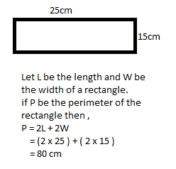

Lesson 58 : Measuring Perimeter
 Explore and Discover!
Explore and Discover!
Explore and Discover!
How will you find the answer to the problem?
To solve for the problem , you add the measurements of the sides of the park.
The park has four sides. So , 55 m + 40 m + 65 m + 35 m = 195m
So , Lorena walks a distance of 195 m every day . this distance around the park is called the perimeter.
Can you think of other ways to find the perimeter of the park ?
A. Study how the perimeter of each figure is obtained.
 Let's Practice!Solve for the perimeter of the following figures:
P = s + s + s + s
P = 15 + 58 + 25 + 25
P = 123m
P = 2L + 2W
P = 2(4) + 2(2)
P = 12m
P = s + s + s
P = 45 + 70 + 60
P = 175m
P = 4s
P = 4(10)
P = 40m